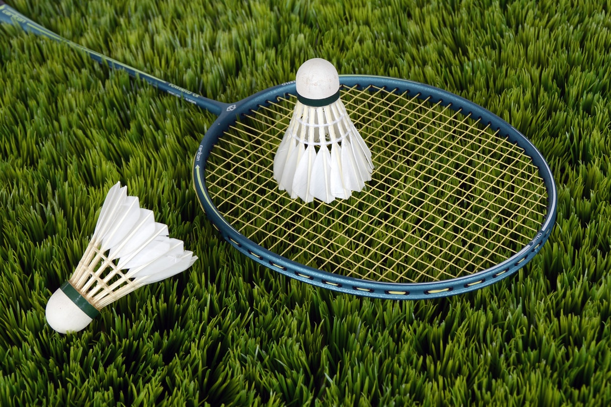
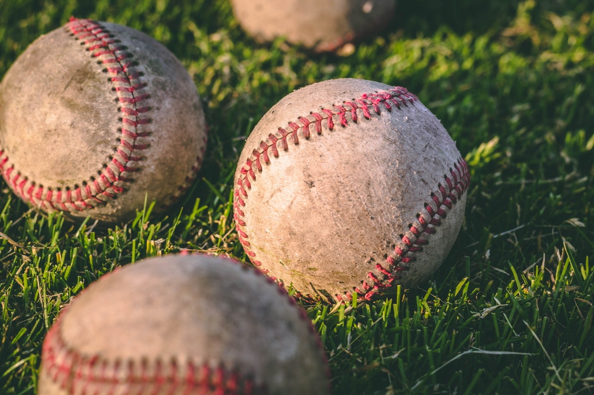
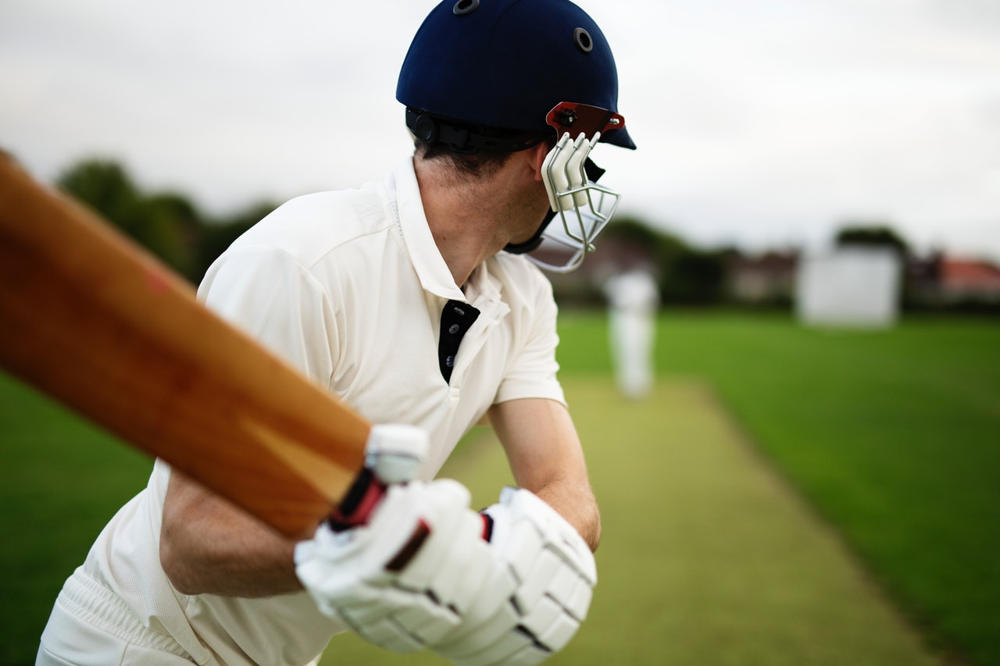
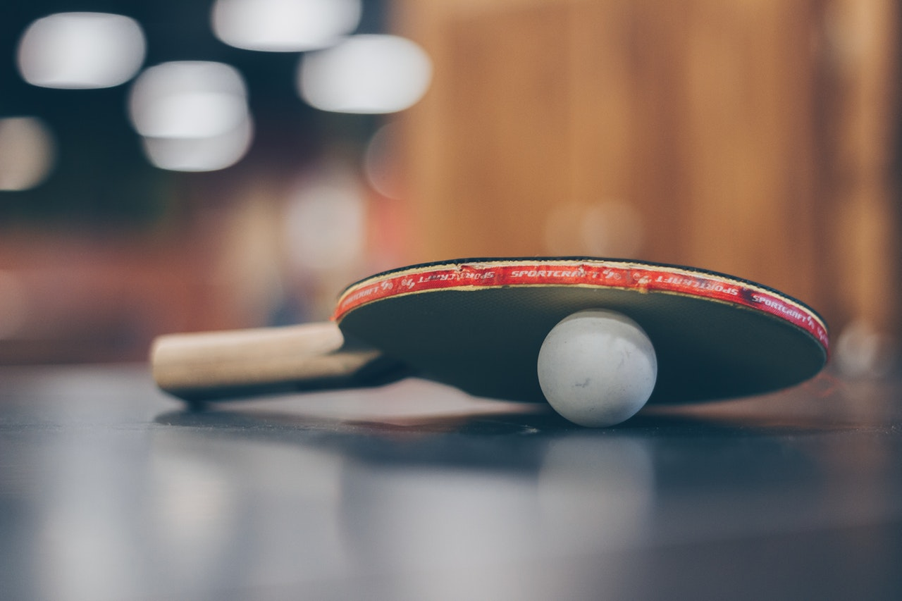
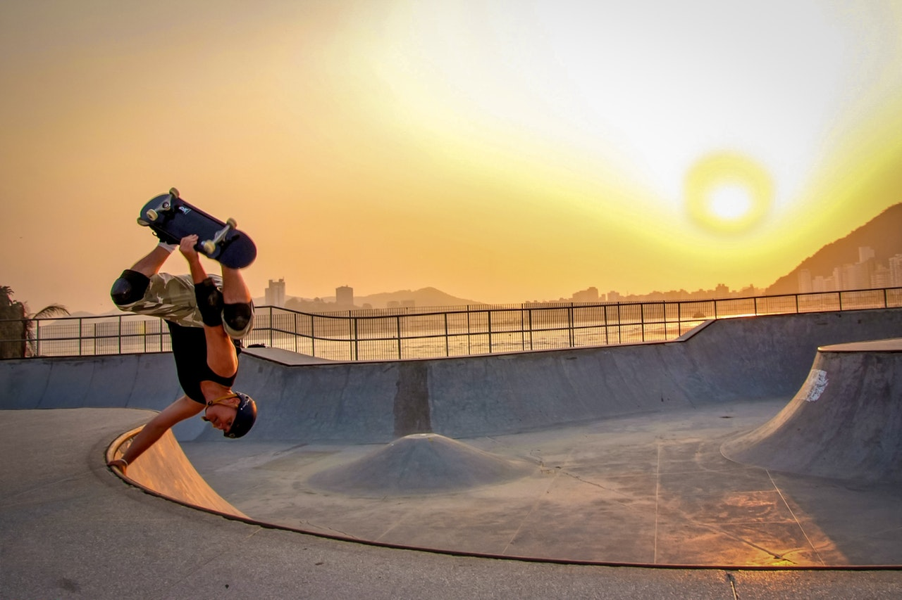
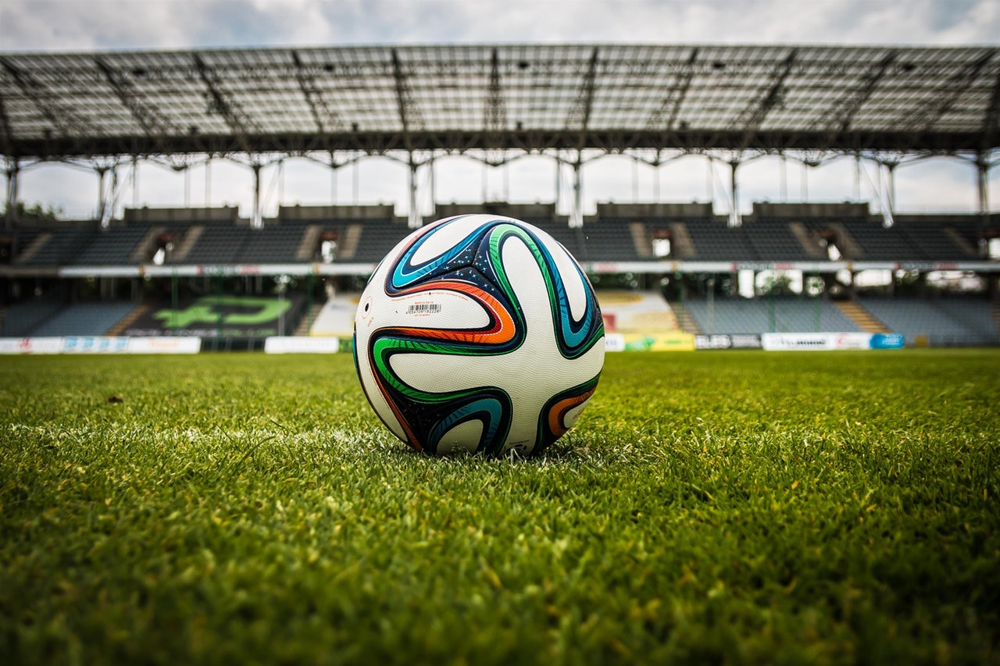
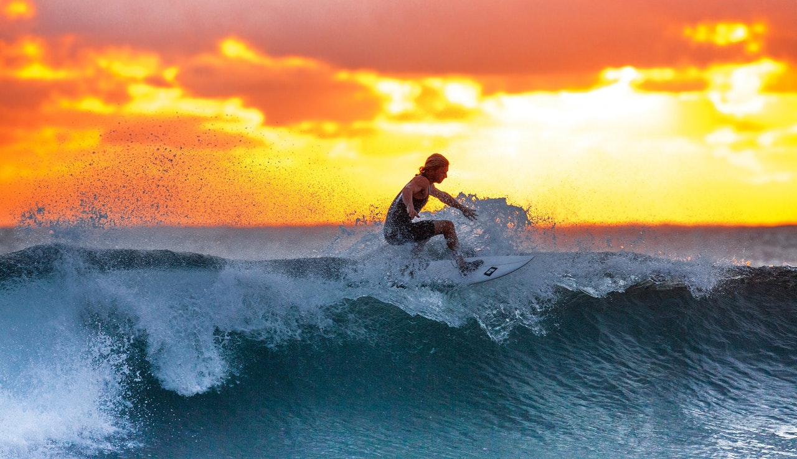

Gallery

Badminton is a racquet sport played using racquets to hit a shuttlecock across a net. Although it may be played with larger teams, the most common forms of the game are "singles" and "doubles".
Baseball is a bat-and-ball game played between two opposing teams who take turns batting and fielding. The game proceeds when a player on the fielding team, called the pitcher, throws a ball which a player on the batting team tries to hit with a bat.
Cricket is a bat-and-ball game played between two teams of eleven players on a field at the centre of which is a 20-metre (22-yard) pitch with a wicket at each end, each comprising two bails balanced on three stumps.

Golf is a club-and-ball sport in which players use various clubs to hit balls into a series of holes on a course in as few strokes as possible.

Auto racing is a motorsport involving the racing of automobiles for competition. Auto racing has existed since the invention of the automobile. Races of various sorts were organised, with the first recorded as early as 1867.
Table tennis, also known as ping-pong, is a sport in which two or four players hit a lightweight ball back and forth across a table using small rackets.
Rugby union, commonly known in most of the world simply as rugby, is a contact team sport which originated in England in the first half of the 19th century. One of the two codes of rugby football, it is based on running with the ball in hand.
Skateboarding is an action sport which involves riding and performing tricks using a skateboard, as well as a recreational activity, an art form, an entertainment industry job, and a method of transportation.
Association football, more commonly known as football or soccer, is a team sport played with a spherical ball between two teams of eleven players.
Surfing is a surface water sport in which the wave rider, referred to as a surfer, rides on the forward or deep face of a moving wave, which usually carries the surfer towards the shore.